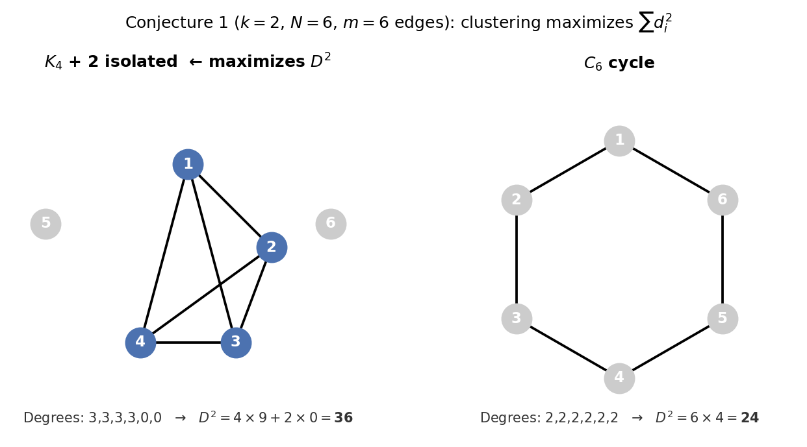
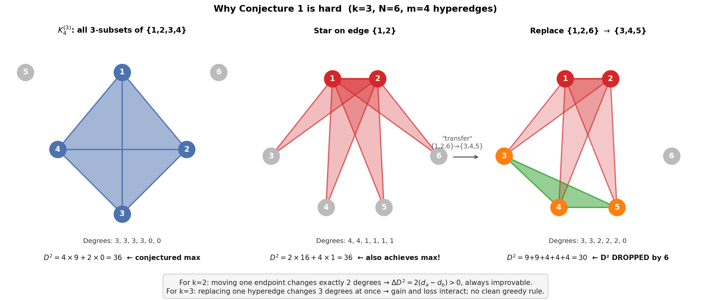

Streaming Switching Lemma
Streaming Switching Lemma
Can a space-bounded adversary (limited to \(S\) bits of memory) distinguish between a stream of \(q\) elements sampled with replacement from \([N]\) (random function) versus without replacement (random permutation)?
First considered by Jaeger and Tessaro at EUROCRYPT 2019 [1].
Statement
Conjecture 1 (Main conjecture) [1]: Let \(k > N/2\) and assume \(m = \binom{A}{k}\) for some \(A \geq k\). Then the complete $k$-hypergraph on \(A\) vertices (i.e., all size-\(k\) subsets of \(\{1, \ldots, A\}\)) maximizes \(D^2_{N,k}(m)\), where
\[D^2_{N,k}(m) = \max_{H \in \mathcal{H}_{N,k}(m)} \sum_{i=1}^{N} d_H(i)^2\]
and \(d_H(i)\) is the number of hyperedges containing vertex \(i\).
Intuitively: among all $k$-uniform hypergraphs with \(N\) vertices and \(m\) edges, the "clique-like" structure (all $k$-subsets of some $A$-element set) maximizes the sum of squared degrees. This is well understood for graphs (\(k=2\)) but open for general \(k\).
Example (\(k=2\), \(N=6\), \(m=6\))

Both graphs have \(N=6\) vertices and \(m=6\) edges, but very different \(D^2\):
- \(K_4\) + 2 isolated vertices (left): degrees \(3,3,3,3,0,0\) \(\Rightarrow\) \(D^2 = 4\times 9 + 2\times 0 = 36\)
- \(C_6\) cycle (right): degrees \(2,2,2,2,2,2\) \(\Rightarrow\) \(D^2 = 6\times 4 = 24\)
The \(K_4\) construction wins because squaring rewards high-degree vertices more than it penalizes the isolated ones. Concentrating edges into a clique always beats spreading them out uniformly.
Why cliques win: an edge-transfer argument
The key is that \(f(x) = x^2\) is convex: its derivative \(f'(x) = 2x\) is strictly increasing. The marginal gain of adding one unit of degree to a vertex already at degree \(d\) is:
\[f(d+1) - f(d) = (d+1)^2 - d^2 = 2d + 1\]
This grows with \(d\), so high-degree vertices benefit more from each additional edge. Symmetrically, the penalty for reducing degree is smaller at low degrees.
Edge transfer: suppose vertex \(a\) has degree \(d_a\) and vertex \(b\) has degree \(d_b\) with \(d_a > d_b + 1\). Moving any edge endpoint from \(b\) to \(a\) changes \(D^2\) by:
\[\Delta D^2 = \bigl[(d_a+1)^2 + (d_b-1)^2\bigr] - \bigl[d_a^2 + d_b^2\bigr] = 2(d_a - d_b) > 0\]
So the transfer is always profitable. Repeating until no such pair exists forces all edges into a clique.
Concrete steps on the \(C_6 \to K_4\) path (same \(N=6\), \(m=6\)):
| Step | Degree sequence | \(D^2\) | Transfer |
|---|---|---|---|
| 0 | \(2,2,2,2,2,2\) | 24 | Start: \(C_6\) |
| 1 | \(3,2,2,2,1,2\) | 26 | Move edge from deg-2 to deg-2 vertex |
| 2 | \(3,3,2,2,1,1\) | 28 | Move edge from deg-1 to deg-2 vertex |
| 3 | \(3,3,3,2,1,0\) | 32 | Move edge from deg-1 to deg-2 vertex |
| 4 | \(3,3,3,3,0,0\) | 36 | Move edge from deg-1 to deg-2 vertex |
Each transfer strictly increases \(D^2\), and the process terminates at \(K_4\).
Why this argument fails for \(k \geq 3\)

The three panels above use \(k=3\), \(N=6\), \(m=4\) hyperedges (drawn as shaded triangles).
- Panel 1 (\(K_4^{(3)}\)): all 3-subsets of \(\{1,2,3,4\}\). Degrees \(3,3,3,3,0,0\), \(D^2 = 36\). The conjectured maximizer.
- Panel 2 (Star on edge \(\{1,2\}\)): four hyperedges all containing vertices 1 and 2. Degrees \(4,4,1,1,1,1\), \(D^2 = 2\times16 + 4\times1 = 36\). This also achieves the maximum, so there are already multiple optimal structures, and it is not clear which one to "aim for".
- Panel 3 (after a transfer): replace hyperedge \(\{1,2,6\}\) with \(\{3,4,5\}\) in Panel 2. This looks like moving weight toward lower-degree vertices, analogous to the \(k=2\) transfer. But \(D^2\) drops from 36 to 30.
The reason the transfer fails is that replacing one $k$-hyperedge touches \(k\) degrees simultaneously. For \(k=3\), removing \(\{1,2,6\}\) penalises the two high-degree vertices 1 and 2 (each loses \(2d-1\) from \(D^2\)) while adding \(\{3,4,5\}\) only rewards three low-degree vertices. Concretely:
\[\Delta D^2 = \underbrace{(3^2-4^2) + (3^2-4^2)}_{\text{vertices 1,2 lose degree}} + \underbrace{(2^2-1^2)+(2^2-1^2)+(2^2-1^2)}_{\text{vertices 3,4,5 gain degree}} + \underbrace{(0^2-1^2)}_{\text{vertex 6 loses degree}} = -14 + 9 - 1 = -6\]
For \(k=2\) the transfer formula was \(\Delta D^2 = 2(d_a - d_b) + 2\), which depends only on two degrees and is easy to make positive. For \(k=3\) the sign of \(\Delta D^2\) depends on the interplay of six degrees at once, and no simple greedy rule emerges.
Streaming Switching Lemma (Theorem 1, conditional on Conjecture 1): Let \(N\) be given,
\(q < N/2\), and \(20\log(e) \leq S \leq N/4\). An adversary with \(S\) bits of memory receiving a stream of \(q\) elements sampled either with replacement (random function) or without replacement (random permutation) from \([N]\) has distinguishing advantage at most
\[\sqrt{\frac{S \cdot q}{N}}\]
Comparison to the standard switching lemma
Without memory constraints, the classical switching lemma gives a distinguishing advantage of \(O(q^2/N)\).
If \(S \approx q\), then \(\sqrt{S \cdot q / N} \approx q / \sqrt{N}\), which is larger than \(q^2/N\) when \(q < \sqrt{N}\) (i.e., below the birthday bound). So in this regime the streaming bound is weaker than the classical one. The streaming lemma is useful when \(S \ll q\), where it gives a tighter bound than \(O(q^2/N)\).
Applications
AES-based counter mode (\(CTR\))
In randomized counter mode, message \(m_i\) is encrypted as \((r_i,\ c_i = \mathrm{AES}_K(r_i) \oplus m_i)\) for a uniformly random nonce \(r_i\).
The security goal is that a space-bounded adversary seeing the stream of ciphertexts cannot learn anything about the messages, i.e., the outputs are indistinguishable from \((r_i, \alpha_i)\) for uniform random \(\alpha_i\).
Two obstacles in the proof
Before the streaming switching lemma can be applied, two obstacles must be resolved:
- Nonce collisions. The \(r_i\)'s are drawn with replacement, so some may repeat. If \(r_i = r_j\), then \(\mathrm{AES}_K(r_i) = \mathrm{AES}_K(r_j)\), and the ciphertext bodies satisfy \(c_i \oplus c_j = m_i \oplus m_j\), a real information leak.
- Permutation vs. random function. Even on distinct inputs, AES is a permutation: its outputs are also distinct, hence correlated. The proof ultimately needs i.i.d. uniform outputs, which a permutation does not provide.
Two-step reduction
Step 1: Treat nonces as distinct. The streaming switching lemma says a space-bounded adversary cannot distinguish a stream drawn with replacement from one drawn without replacement. Applied to the \(r_i\)'s: the adversary cannot detect whether any nonces collide, so we can assume WLOG all \(r_i\)'s are distinct. This costs \(O(\sqrt{Sq/N})\).
Step 2: Replace the permutation with a random function. With distinct inputs, the classical switching lemma applies: a random permutation on distinct inputs is indistinguishable from a random function. For a space-bounded adversary this replacement again costs \(O(\sqrt{Sq/N})\) via the streaming version of the lemma. With a random function \(F\), the outputs \(F(r_i)\) are i.i.d. uniform, so \(c_i = F(r_i) \oplus m_i\) is uniform and independent of \(m_i\).
The streaming switching lemma is thus applied multiple times throughout the reduction. The resulting security bound for CTR$ is \(O(\sqrt{ST/N})\), where \(T\) is the number of encrypted blocks, a significant improvement over the classical \(O(T^2/N)\) when the adversary is memory-constrained (see Figure 1 of [1]).